编码和调制
[!note]
RFID系统数字信号的主要特点:
- 信号的完整和安全性
- 信号便于存储处理和交换
- 便于集成化微型化
- 便于构成物联网
数据、信号、带宽
数据
可定义为表意的实体
又分为模拟数据和数字数据
模拟数据：在某些时间间隔上取连续的值
数字数据：数字数据取离散值，例：文本或字符串。在射频识别应答器中存放的数据是数字数据
一般在RFID应答器存放数字数据
信号
模拟信号和数字信号
模拟信号：连续变化的电磁波；在时域表现为连续变化，在频域其频谱离散；模拟信号用来表示模拟数据
数字信号：电压脉冲序列，表示数字数据
信号的频谱：指频率的分布曲线
时域：电压和v和时间t之间的关系，即信号的幅度随时间变化的曲线,横轴是时间,纵轴是信号的幅度,一般的正弦波比如f(t)=sinwt就是时域曲线
频域：电压v在频率轴上的分布，即信号的幅度与频率的关系,函数比较复杂,可能是不连续的
信号带宽
信号频谱的宽度，范围广，但有效范围窄
信道
信道分为传送模拟信号的模拟信道以及传送数字信号的数字信道
传输介质分为两大类：导向传输介质（电磁波沿着固态介质传送）、非导向传输介质（自由空间无线传输，即无线信道）
- RFID的信道采用无线信道：无线传输所用的频段很广，包括无线电、微波、红外线和可见光
国际电信联盟(ITU)对波段的划分：
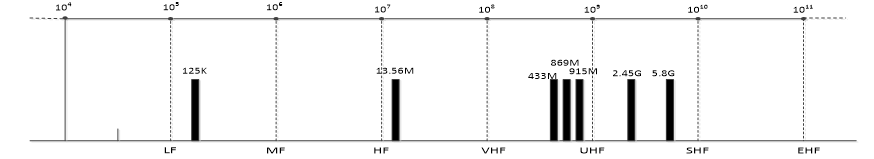
信道的特性
对于无线传输，发送和接收是通过天线完成的。
发送天线向介质辐射出电磁能量
而接收天线从周围介质中检出电磁波
传输损耗与失真
衰减：对于无线信道，衰减和距离、空气成分和电波频率有关
延迟变形：不同频率的成分在传输介质中传播速度不同而使信号变形的现象。个位元的信号成分可能溢出到其他位元，从而引起串扰。
噪声：在信号传输过程中，经常遇到的干扰是噪声。
- 白噪声，热噪声
- 脉冲噪声：突发性的
带宽
- 信号的大部分能量往往集中在较窄的一段频带，称为该信号的有效带宽或带宽
- 一般信道都有一个最高和最低的信号频率，在这两个频率之间的信号才能通过这个信道
- 这两个频率的差值就叫做这个信道的带宽，单位是Hz
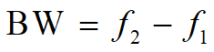
信道容量
- 反映了信道所能传输的最大信息量，数据在信道中传输的最高的比特率就叫做这个信道的容量，单位是bps
[!tip]
具有理想低通矩形特性的信道。
根据奈奎斯特准则，这种信道的最高码元传输速率V=2BW
也即这种信道的最高数据传输速率即信道容量为：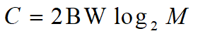
BW是信道的带宽，M是码元数
奈奎斯特定理与香农定理
奈奎斯特定理
无噪声信道，用来计算理论值
香农定理(计算有噪声的信道)
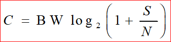
S：信号的功率，N：噪声的功率
S/N 指的是信道的信噪比
[!note]
信道容量决定于：带宽，S/N(信噪比) ，编码。
RFID采用微波，微波比低频和高频有更大的带宽
数字通信模型及特点
安全性高：
在传输过程中可实现无噪声积累，0，1 信号再生，消除干扰
通过相应的编码方法使接收端能具有检错或纠错能力
便于加密，存储，处理和交换，设备集成化微型化
信道频带宽
概念
波特率
数据信号对载波的调制速率，即：数据传输过程中，在信道上每秒钟传送的信号波形个数，单位是Baud
从信号的角度来说
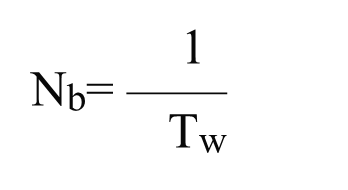
比特率
信号每秒钟传输的数据的位数，也就是每秒钟传输0和1的个数，单位是bps
与波形速率和一个波形所携带的信息量有关
从信息的角度来说
[!important]
波特率与比特率的关系：
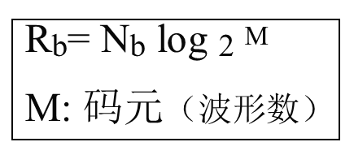
数字通信的主要性能指标
数据传输速率
指信道中每秒通过的数据位，单位是bit/s
代表了数据传输效率
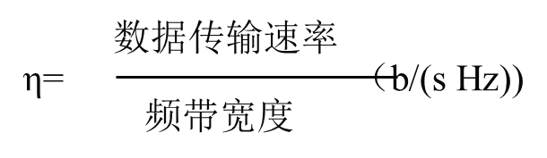
信道频带宽度：传输信息的能力
误码率：发生误码的码元与传输的总码元之比
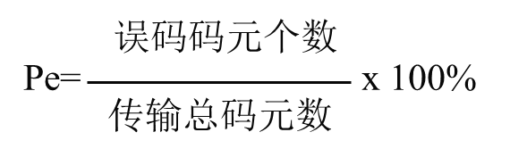
RFID通信方式
RFID通信是指读写器和标签之间，采用无线电信号传输信息，
其主要特点是：通信距离很短
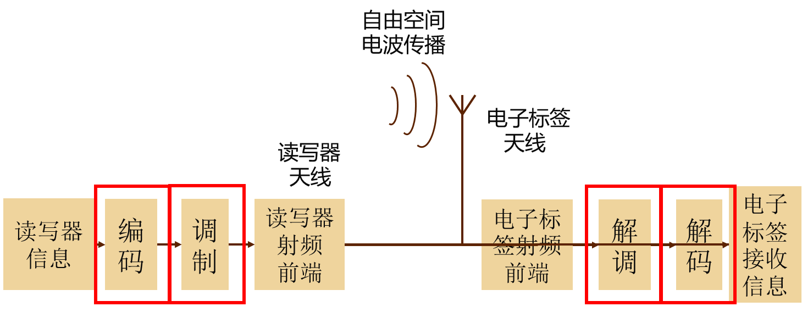
信号的编码与调制
- 信号是消息的载体，消息以信号的形式传送到另一点
- RFID主要处理数字信号
- 信号又可分为基带信号（两个电压电平表示1/0）和调制信号
- RFID传输技术中，对信号频域的研究更重要
通信握手
- 读写器与电子标签双方在通信开始、结束和通信过程中的基本沟通，通信握手要解决通信双方的工作状态、数据同步和信息确认等问题
编码
- 编码是为了达到某种目的而对信号进行的一种变换。其逆变换称为解码或译码。
- 编码理论有信源编码、信道编码和保密编码
- 其中信道编码：对信源编码器输出的信号进行再变换为适合于数字信道的数字信号，包括区分通路、适应信道条件和提高通信可靠性而进行的编码.
数字编码方式
用不同的电平来表示两个二进制数字
单极性矩形脉冲（NRZ码）：
- 脉冲之间无间隔，极性单一，易于用TTL、CMOS电路产生
- 适用于计算机内部或极近距离的传输
双极性波形：
当“1”和“0”等概率出现时无直流分量，有利于在信道中传输
在接收端恢复信号的判决电平为零值，因而不受信道特性变化的影响，抗干扰能力也较强
按信号是否归零，信号在上电平（正, 零,负）之间变化
- 归零码：码元中间的信号回归到0电平
- 非归零码：遇“1“信号电平发生变化，遇”0”时不变
简单二元码：
[!note]
- 单极性非归零码（NRZ）
- 双极性非归零码（NRZ）
- 单极性归零码（RZ）
- 双极性归零码（RZ）
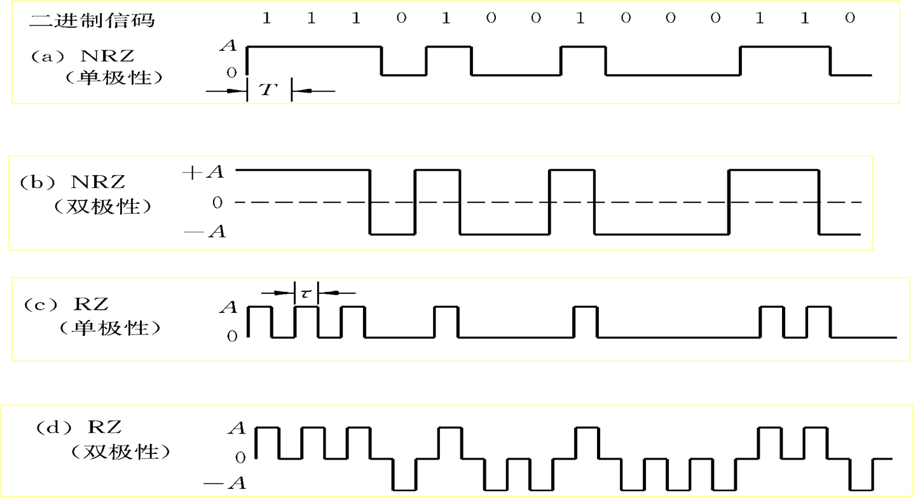
RFID的编码
- 反向不归零编码
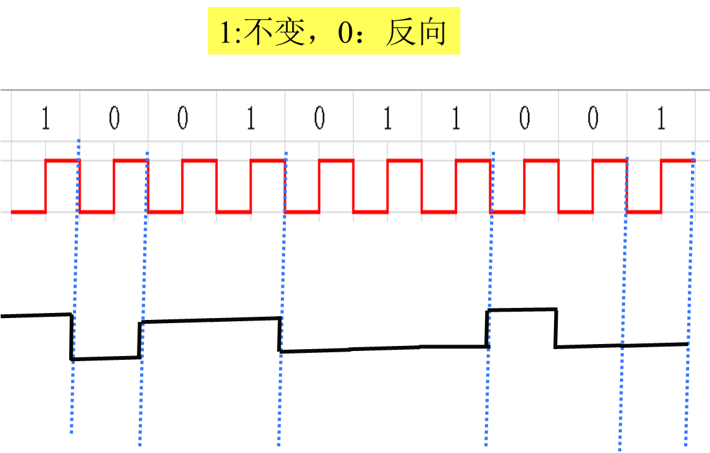
- 单极性归零编码
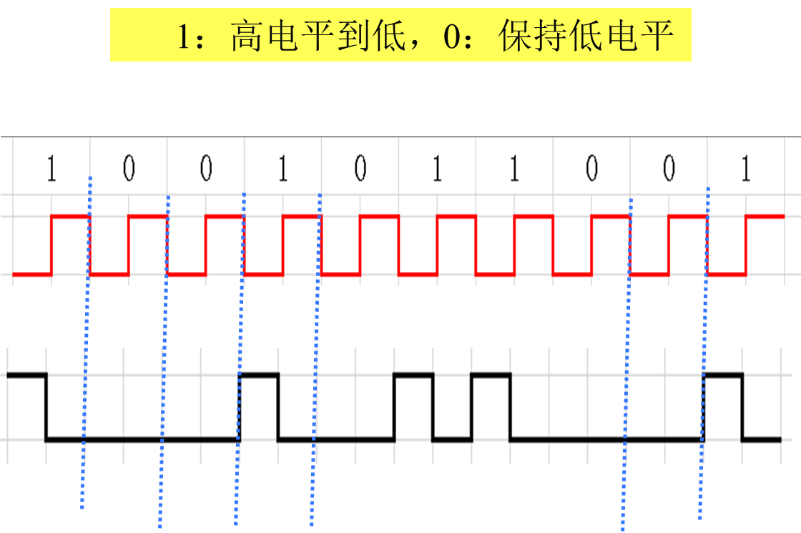
- 曼彻斯特编码
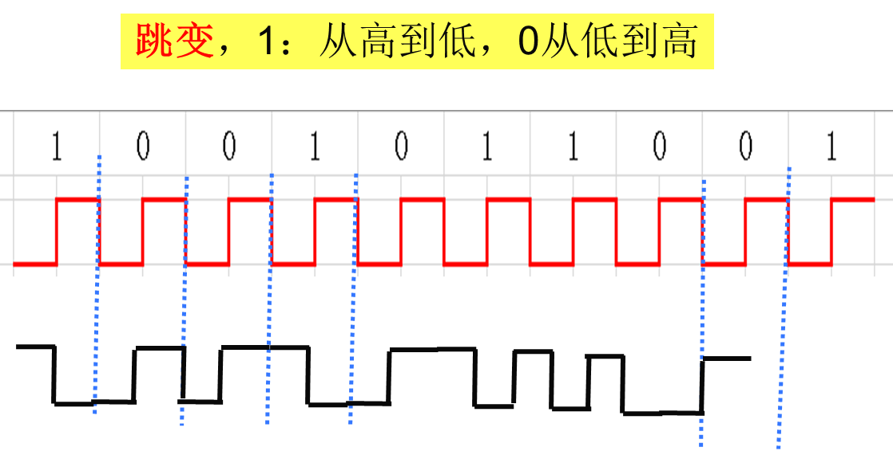
每一位的中间有一跳变，位中间的跳变既作时钟信号，又作数据信号
[!tip]
差分曼彻斯特编码，每位中间的跳变仅提供时钟定时，而用每位开始时有无跳变表示"0"或"1"，有跳变为"0"，无跳变为"1"。
密勒(Miller)编码
1：半周期有跳变， 0：半周期无跳变，
- 发送连续的“0”时，在数据的开始处增加一个跳变
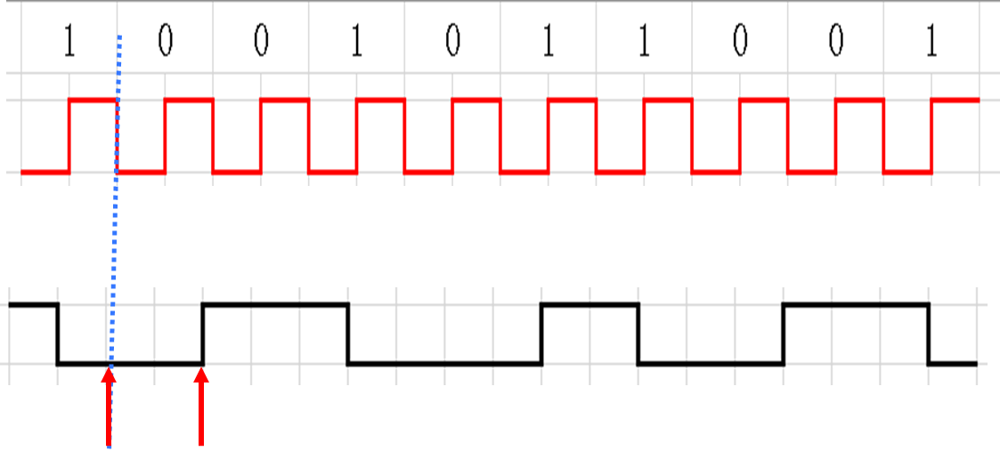
- 变形密勒编码
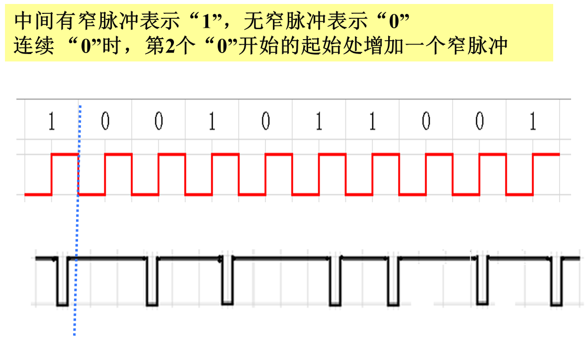
RFID编码的关键问题
- 适应传输信道的频带宽度
- 有利于提取时钟
- 误码检测
- 码型变换简单
- 电子标签能量来源
曼彻斯特码的编码、解码器
编码
- 数据时钟 ⊕ 数据
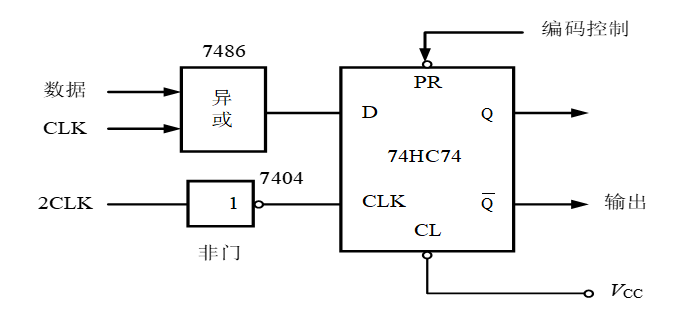
解码
曼彻斯特码与数据时钟“异或”，便可恢复出NRZ码数据信号
通常,采用曼彻斯特码传输数据信息时,信息块格式：
起始位采用”1”码,结束位采用无跳变低电平
[!tip]
11组合是非法码，出现的原因可能是传输错误或冲突
调制和解调
- 基带信号
- 可以是数字，也可以是模拟
- 近距离通信的局域网都采用基带传输。
[!important]
调制的目的：把传输的基带信号，变换成适合信道传输的信号
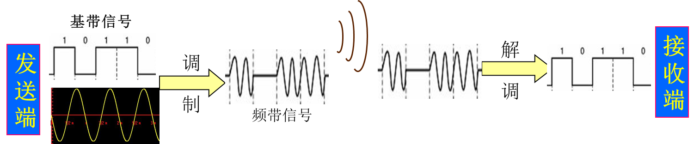
调制类型
脉冲调制
- 将数据的NRZ码变换为更高频率的脉冲串，该脉冲串的脉冲波形参数受NRZ码的值0和1调制。
- 主要的调制方式为频移键控FSK和相移键控PSK
- FSK：用于频率低于135 kHz（射频载波频率为125 kHz）主要用于阅读器
- PSK：
- PSK1：绝对码2PSK
- PSK2：相对码2DPSK
载波调制
信号与一个固定频率的波进行相互作用----加载 这个固定频率的波----载波
在RFID系统中，正弦载波还为无源电子标签提供能量。
载波调制解调方式
频移键控: FSK：频率在多个频率间进行调制，125KHz采用
利用载波的频率变化来传递数字信息，是对载波的频率进行键控。
二进制频移键控载波的频率只有两种变化状态，在f1和f2两个频率点变化，分别对应1和0
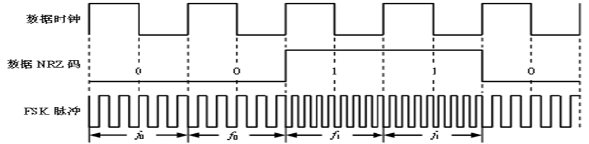
相移键控: PSK ：相位在多个值之间调制
PSK1调制时，若在数据位的起始处出现上升沿或下降沿（即出现1，0或0，1交替），则相位将于位起始处跳变180°
PSK2调制时，相位在数据位为1时从位起始处跳变180°，在数据位为0时则相位不变，使用较少。
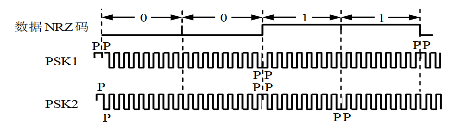
PSK具有较高的频带利用率，在误码率、信号平均功率等方面比ASK性能更好
幅移键控: ASK ：振幅在多个电平间调制，大功率传输，多数射频识别系统采用
副载波调制
- 副载波是相对于主载波而言的
- 信号调制在载波1上，对结果再进行一次调制，用这个结果去调制另外一个载波2
副载波频率是通过对载波的二进制分频产生的
主要用于电子标签到读写器方向的数据传输
[!note]
标签将基带编码调制到低频率的副载波频率上，
再采用ASK、FSK或PSK对副载波进行二次调制。
副载波与副载波调制解调
- ISO/IEC 14443标准的TYPE A中的副载波调制，规定： PICC—> PCD
标准帧的结构：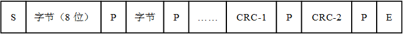
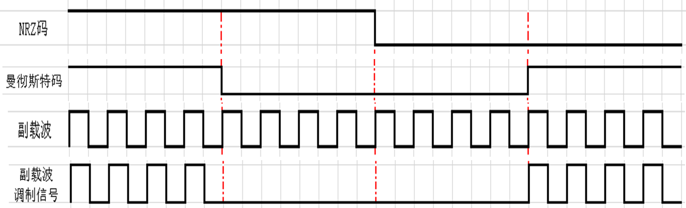
- TYPE B中的副载波调制：位编码采用不归零NRZ编码，副载波调制采用BPSK方式
- θ0表示逻辑1， θ0＋180°表示逻辑0

载波调制
载波通常是高频正弦振荡信号
- 频移键控（FSK）
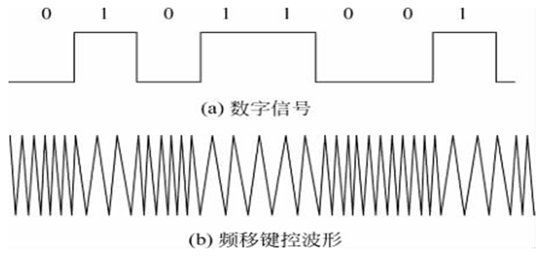
- 二进制相移键控（PSK）
利用载波的相位变化来传递数字信息，是对载波的相位进行键控。
通常载波的初始相位在0和π两种状态间变化，分别对应二进制信息的0 和1 。
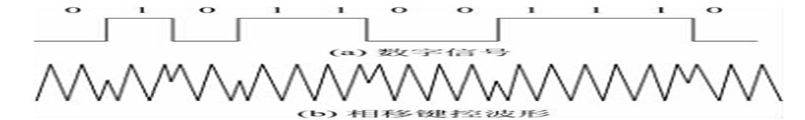
[!tip]
PSK也可分为二进制PSK（2PSK）和多进制PSK（MPSK）
- 二进制幅移键控(ASK)
利用载波的幅度变化来传递数字信息
载波的幅度只有两种变化，分别对应二进制信息的1和0。
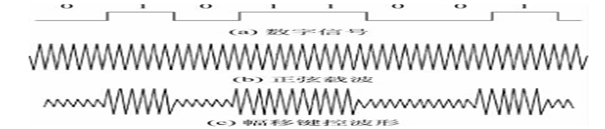